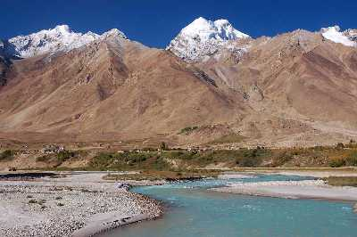

Ladakh Tourism
Ladakh is a region administered by India as a union territory, and constituting a part of the larger region of Kashmir, which has been the subject of dispute between India, Pakistan, and China since 1947. A land like no other with a superabundance of attractions to visit and fabulous landscapes, amazing people and culture, Ladakh is truly a heaven on Earth.Bounded by two of the world's mightiest mountain ranges, the Great Himalaya and the Karakoram, it lies athwart two other, the Ladakh range and the Zanskar range
| Pangong lake |
|---|
 |
| The famous and sparkling blue Pangong lake is situated near Leh-Ladakh in the Himalayas, approximately at the height of 4350 meters. This endorheic lake is 12 kilometres long and extends from India to Tibet, with two-thirds of it lying in the latter. Owing to its altitude, the Pangong Lake temperature ranges from -5°C to 10°C as a result of which it freezes completely during winters in spite of its salinity. | Magnetic Hill |
| The popular Magnetic Hill of Ladakh is said to be a gravity hill where vehicles defy the force of gravity and move upwards on the hill when parked at the marked location. The hill lies at a distance of 30 km from the town of Leh, at an elevation of around 14,000 feet above sea level. To the eastern side of the hill flows the Sindhu River, originating in Tibet and is an almost essential stopover for all those who travel to Ladakh | Zanskar Valley |
|  |
| Nestled in a remote corner of Ladakh, the Zanskar Valley is one of the most enchanting places to visit. It is located in the eastern corner of Jammu and Kashmir and is separated from Ladakh by the Zanskar Mountain Range. It is a part of The Tethys Himalayas which is formed with weekly transformed sedimentary series. Zanskar Valley is known for its wide views and sceneries, cave monasteries and mostly travelled to for its trekking trails and river rafting experiences and the Suru Valley, the two valleys almost always visited together.Nestled between two tiny alpine lakes, most isolated of all Himalayan valleys, Zanskar Valley has an area of about 5,000 sq kms and is situated at an elevation of 13,154 above sea level. This valley is cut off from the rest of the world for over 9 months of the year because of heavy snowfall in the region. Due to the distinct flora and fauna and the extremely variant climate, Zanskar Valley has become one of the most sought after places to visit. With a backdrop of the beautiful snow-capped glacier mountain peaks and the crystal clear water gushing down the valley, it has gained even more popularity. |
| Back |